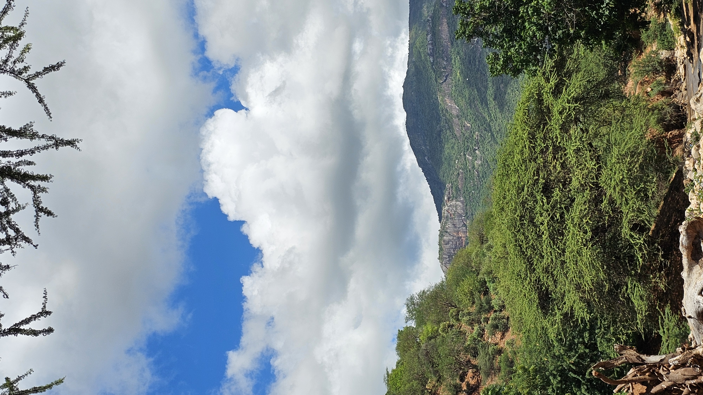

Sacred wellness from the slopes of Mount Ngiro, preserving Samburu heritage for the world.
Rising from the heart of Samburu County, Mount Ngiro has long been revered by local communities as a sacred mountain rich in healing plants and natural abundance. For generations, Samburu elders have relied on the mountain's herbs and wild honey for nourishment, medicine, and cultural rituals.
Ngiro Treasures was founded to preserve this heritage and share the mountain's natural gifts with the world. We believe that the wisdom of indigenous communities holds answers to many of the wellness challenges facing modern life.
When you taste Ngiro Treasures Raw Wild Honey, you are experiencing nature in its purest form. Unlike commercial honey that is often pasteurized, heavily filtered, and blended with artificial syrups, our wild honey is sustainably harvested by traditional beekeepers in the pristine, untouched forests of Samburu County, Kenya.
The slopes of Mount Ngiro are home to diverse, indigenous flora, many of which are known for their profound medicinal properties. Our bees forage on these sacred plants, infusing the honey with naturally occurring vitamins, minerals, antioxidants, and enzymes. This results in a superfood that not only tastes incredible but also acts as a natural immunity booster, soothing remedy for coughs, and an excellent source of sustained energy.
Furthermore, consuming authentic raw wild honey preserves the essential bee pollen and propolis, which are crucial for fighting inflammation and supporting a healthy digestive system. Our harvesting process ensures that the honey remains completely unprocessed, passing from the comb to the jar with zero additives.
By choosing Ngiro Treasures, you are not only prioritizing your own holistic wellness, but you are also actively supporting the indigenous Samburu communities who rely on these ancient forests. We practice ethical, sustainable harvesting that respects the delicate balance of the mountain's ecosystem, ensuring that the bees thrive and the forest continues to flourish for generations to come.
Embrace natural healing, vibrant health, and ethical consumption with our raw wild honey and sacred herbal products.